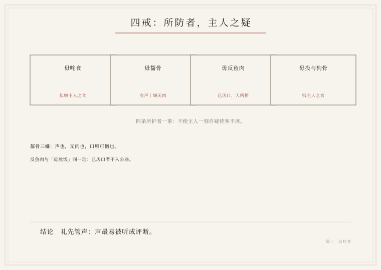

曲礼上 · 一·六十九 · 第 67 课
四件事不许做：吃东西时以舌作声；啃骨头；把咬过的鱼肉放回器里；把骨头丢给狗。
说什么事：毋咤食，毋齧骨，毋反鱼肉，毋投与狗骨。
落在哪一层：仪。上节戒取与还，此节戒声与余。
为何编在此位：一·六十六讲三戒，此节续四戒；自「争」入「嫌」，所防者由贪转慢。
【经】毋咤食，毋齧骨，毋反魚肉，毋投與狗骨。
【注】嫌薄之。為有聲響，不敬。為已歷口，人所穢。為其賤飲食之物。
毋咤食 注「嫌薄之」。疏：「咤谓以舌口中作声也，似若嫌主人之食。」
毋齧骨 注「为有声响，不敬」。疏析为三：一则有声；二则嫌主人食不足，以骨致饱（庾云「为无肉之嫌」）；三则齧之口唇可憎。
毋反鱼肉 注「为已历口，人所秽」。疏：「谓与人同器也，己齧残不可反还器中。」崔灵恩云：「不可反于故处。」
毋投与狗骨 注「为其贱饮食之物」。疏：「为客之礼，无得食主肉后，弃其骨与犬。」
吃东西不要以舌作声；不要啃骨头；不要把咬过的鱼肉放回器里；不要把骨头丢给狗。
四条戒，都防「主人疑心」。咤食像嫌菜薄，齧骨像嫌肉少，反鱼肉是把己之余还众，投骨与狗是把主人之食当贱物。四条看似琐细，所护者只一件事：不使主人有一刻觉得自己待客不周。
第一层 声之嫌 疏解「咤」为「似若嫌主人之食」。声音本身无恶意，而在食桌上，声音会被听成评断。礼先管声，正因声最易被误解。
第二层 骨之嫌 疏三说并出，第二条最切：齧骨像「以骨致饱」，即嫌无肉。主人若闻此想，则一餐不安。
第三层 反鱼肉之秽 此条与「毋放饭」同类：凡是已历口者，不可还于公器。饭与肉不同，理则一。
第四层 投骨与狗之贱 注「为其贱饮食之物」。把主人的肉与狗食并列，是轻慢。此条所戒者不在卫生，在敬。
与今日何干 今人吃饭出声、啃骨、把咬过的菜夹回盘中、把剩骨随手扔给桌下的狗，仍是四样。礼不是要人吃得拘谨，是要人不让同席者难堪。
| 左 | 右 |
|---|---|
| 毋咤食 | 以舌作声，似嫌主人之食 |
| 毋齧骨 | 有声、嫌无肉、口唇可憎 |
| 毋反鱼肉 | 已历口，人所秽；共器不可反 |
| 毋投与狗骨 | 贱主人之食，轻慢 |
| 四条所护 | 不使主人一刻自疑待客不周 |
画案上一具俎，俎上骨体尚整、未见啃咬痕迹；俎旁一只豆，豆中鱼肉片整整齐齐，无缺口；案下远处卧着一只空犬食器，器中干净无骨。三处并置。不画人、不画犬、不写文字。赭色只在俎足与犬器沿。
